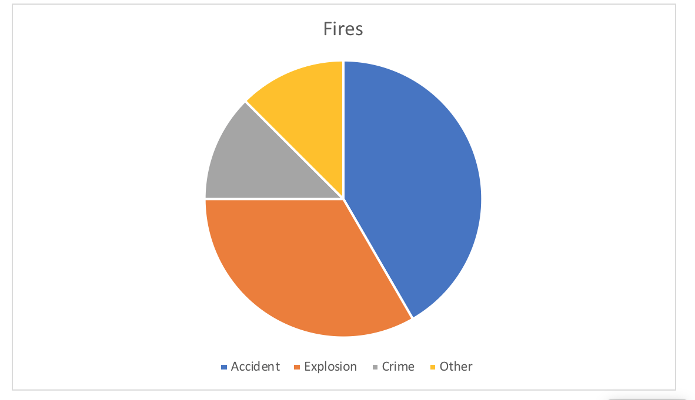

Fires
With Egypt being located along the Mediterranean Coast, most of their months in the summer is hot and dry in the majority of the country, and humid in the Delta. When temperatures become so high, it can be extremely easy to ignite or cause a fire by heat from the sun. The topic that I am going to analyze for this paper is the fires that appear in Alexandria, Egypt and that are accounted for and the amount of fatalities marked in each. This topic sparked my attention after hearing about the past several years of the wildfires in California. The week that was given to me was the week of February 11th, 1907. With a fire the rate of survival can decrease, and the costs of damage and replacements can increase. The question of interest is if there is a high number of deaths due to fire, is that the reason there is so many insurance company advertisements within the Egyptian Gazette.
Looking through issues of the Egyptian Gazette, I found several features and advertisements about fire. I was interested to see how many fires were accounted for and the amount of fatalities that were acknowledge within each instance. I became interested in the trends that may also carry over to insurance companies of the Alexandria and Cairo area seeing if the reason there is so many is due to the amount of fire that are counted for in Egypt.
After downloading a copy of the master content from GitHub, the first preliminary query I ran was for any div type item that contained the word fire, which resulted in coming upon several fire incidents, but as well as a variety of insurance companies. Upon first glance, this information would indicate that there were various occasions of fires in the early 1900s, but with additional inquiry, a lot of those instances of the word “fire” were advertisements for insurance companies. These advertisements are still relevant to my project and will come into play in further explanation. I took into account that where most of the fire instances were being reported was in the “Local and General” section of each issue where there was an outbreak of a fire.
With the primary knowledge of this project being from the repository, I also took it upon myself to research the history of fires in Egypt in the early 1900’s. Much to my dismay, my research came up short when the only incident of fire I came across was in Cairo Egypt much later in the 1950s called the Cairo fire, also known as Black Saturday. Cairo Fire was a series of riots that took place on 26 January 1952, marked by the burning and looting of some 750 buildings. If the riots of Cairo were bad in the 1950’s, there could be a likelihood that they were not as far off in the early 1900’s.
By looking through the repository with the keywords “fire” and “death”. which focused on the number of fatalities in reported fires, Each XPath query was searched with an item containing the word “fire”. When first using the term, there were over two hundred results, however upon looking through them it is easy to see they don’t fit the article type I need. Some of these articles simply talk about advertising for insurance companies and the rest would only indicate that a fire occurred, but no other details were given. Getting further into my research I soon realized that these findings weren’t the most helpful, there were not a lot of deaths with each report of a fire. At this point I decided to change my research from the amount of deaths reported in each fire instance to the reason of each fire. After doing this I erased my keyword “death” and just decided to look through the “Local and General” section to see the reports of fire and the origin of each one.
When discussing with other classmates about their analysis projects, as well as looking on GitHub, a lot of them seemed to have the same problem of having a topic that was so broad, but not knowing how to reduce the results with the proper keywords which is the major problem I ran into. I didn’t know how to reduce the amount of results I was getting back since a majority of them were advertisements without using the word “fire”. So after further discussion, I decided to change where I was looking in the repository. I narrowed it down to only looking in “Local and General” although there were maybe a few reports of fire in “Personal and Social” the majority of the content I was looking for was found in “Local and General”.

In this graph it shows the percentage of the cause of fires from 1906-1907. With a total of 19 reported fires from 1906-1907, there were 10 that were accidental, 8 that were caused from an explosion, 3 that were caused from a crime, and 3 that were caused from miscellaneous categories. With the section of explosions, the occurrences of fire were either on a boat or from mining. At the time in Egypt, there was a high demand for coal and the use of coal for the steam powered engines on the ships which explains why there were instances of explosions that would turn into a fire in the mines and on the boats. From the graph, you can see that a lot, if not all, of the instances would need to utilize the outside help of insurance companies afterwards to help with damage and repairs, which would explain why a lot of the insurances companies I came across in my issues, as well as other classmates, had fire mentioned in the advertisement.
In conclusion, the amount of deaths that were accounted for with each instance of a fire is not significant enough to say the fires are the reason there is so many insurance advertisements in Alexandria, Egypt which is why I changed my research to the cause of each fire. That doesn’t go to say though that the amount of fires reported don’t factor into the amount of insurance advertisements because with each fire comes a large amount of costs and repairs. Although the insurance companies probably do take use in the instances of fire, there are other tragedies that occurred during that time frame in Egypt where insurance companies would need to be utilized.
Bibliography
Coolben, Adam. “ The Cairo Fire of 1952 .” Association for Diplomatic Studies & Training.
Kelsey Meyer
Student
The author, a student at Florida State University, was enrolled in the digital microhistory lab in spring 2018.